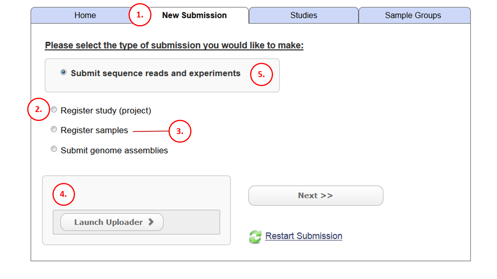

Module 1: Submission Options¶
The majority of submissions to the ENA begin here.
- Log in and access “new submission” tab
- If you have not already, create a study using this option. Complete this step BEFORE going on to step 3.
- If you have not already, create sample objects to represent your source material. Complete this step before going on to step 4
- You are nearly ready to register your NGS read files. You need to upload them to your ENA ftp directory (you have one with your account). This JAVA applet does not work in all environments. See here for alternative upload methods.
- This step combines multiple steps from above but it is preferable to split the job up (so that you have already registered a study and some samples). Use this step to create Runs and experiments. These will link everything together:
Experiment and run objects associate read files to their source sample and a study.